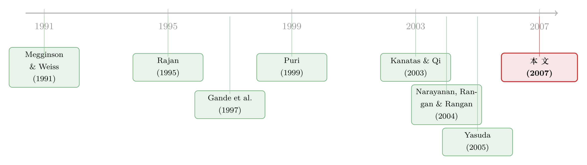

没有招牌的新人，凭什么让你把发债的活儿交给他？
本文读的是 Narayanan, Rangan & Rangan (2007, Review of Financial Studies)：在债券承销这门生意里，商业银行本是没有「招牌」的新人，但它们能把自己在银团贷款与私募发行（私募债）里攒下的声誉「平移」过来——既靠它从贷款客户手里抢到承销订单，又靠它向投资者可信地承诺不会滥用放贷时掌握的私密信息，从而把发行价格抬高（收益率降低约 14 个基点），而且这份好处没有被更高的承销费吃掉，最终让发行人的总融资成本反而更低。
1 一个新人的尴尬
先讲一个场景。1990 年代，美国的商业银行被允许重新走进一度被禁止的领域——为企业承销公开发行的公司债券。这是一桩诱人的生意：商业银行手里握着一张投资银行没有的王牌——它给企业放过贷款，对这家企业的底细一清二楚。按理说，谁更懂这家公司，谁就更能把它的债券定价、卖出，也更能替发行人省钱。这就是所谓的「放贷—承销协同优势」。
但事情没那么简单。
一个企业要发债，最关心的不是承销商「懂不懂我」，而是投资者信不信他。在新发行市场里，投资者看不清债券的真实质量，只能借助承销商的声誉来推断——这是承销商存在的根本理由，行话叫认证 (certification)。问题恰恰出在这里：商业银行是债券承销市场上的新人，它没有历史，没有「招牌」，凭什么让投资者相信它定的价是公道的？
更糟的是，商业银行那张「懂你」的王牌，反过来可能变成催命符。它既是放贷人、又是承销人，掌握着别人不知道的内部信息。投资者完全有理由怀疑：万一这家银行知道借款企业要出事，急着把烫手的债券甩给市场套现呢？这种「机会主义」的嫌疑，会让本该是优势的信息地位，反噬成劣势。
这就是全文的张力所在：既有文献（下面会讲）已经反复证明商业银行确实实现了它的放贷协同优势——它们抢到了订单、压低了成本。可是，它们究竟是怎么越过「投资者不信任」这道坎的？ 一个没有债券承销招牌、又背着「内部人」嫌疑的新人，是靠什么取信于市场的？这个问题，此前一直悬而未决。
2 一个被忽略的「替身」
接着，一个自然的问题是：商业银行真的两手空空吗？
并不是。它在债券市场是新人，但它早就是银团贷款 (syndicated loans) 和私募发行 (private placements) 这两个市场上的老手。本文把这两类业务合称私募债 (private debt)，与公开发行的公开债 (public debt) 相对。
作者花了相当篇幅说明一件容易被忽视的事：私募债的承销，和公开债的承销，本质上是同一门手艺。传统文献喜欢把私募债说成「关系型」、把公开债说成「交易型」，井水不犯河水〔见 Boot & Thakor (2000)〕。但作者指出，随着信贷市场与资本市场的融合，这条界线早就模糊了。一笔典型的银团贷款，牵头行要筛选、监督借款人，还要起草信息备忘录、向潜在参贷行做路演、撮合定价、组织辛迪加——这套动作和承销一只债券几乎一模一样。Rule 144A 下的私募发行更是如此，银行扮演的就是承销商的角色，把债券分销给机构投资者。
关键的逻辑在于：既然两个市场要求的技能（定价、组团、营销）高度相似，那么一家银行在私募债市场被验证过的能力，就能让投资者合理预期它在公开债市场也有同样的本事。
于是本文的核心假说浮出水面：
私募债承销声誉，可以替代（substitute for）公开债承销声誉。 它一方面帮商业银行从贷款客户那里赢得承销订单，另一方面——也是更微妙的一面——让银行能够可信地承诺不滥用放贷信息，从而交付出比投资银行更优的认证服务，压低发行人的融资成本。
用作者的比喻来说：在股票承销市场，商业银行采取的是「联合品牌 (co-branding)」策略——拉一家有声望的投行联合主承，借别人的牌子证明自己〔这是作者团队 Narayanan, Rangan & Rangan (2004) 的发现〕；而在债券承销市场，它们玩的是「品牌延伸 (brand extension)」或者说「伞形品牌」——把自己在私募债里的招牌，直接撑到公开债市场上来。
（关于商业银行与公开债的此消彼长，也可参见《借公开债，是为了躲开银行的眼睛》；关于「银行为什么愿意先在关系上投入」，可参见《银行为什么舍得先亏本拉客？》。）
3 怎么把「声誉」量出来
要检验这个假说，第一步是给「私募债声誉」找一把尺子。
承销市场的声誉代理变量，通常有两种做法：基数 (cardinal) 度量，即承销商在该市场的市场份额——逻辑是声誉带来份额，份额便与声誉相关；序数 (ordinal) 度量，即把份额转成「前五」「前十」这样的排名，或者看「墓碑广告 (tombstone)」里承销商名字的排位。Megginson & Weiss (1991) 早就指出，两种度量高度相关。
作者两种都构造了。它们从 LPC 的 Dealscan（银团贷款）和 SDC 的 Domestic New Issues（私募发行）这两个数据库的「联赛榜 (league tables)」里，取出 1992–1996 年每家银行的市场份额，再按市场规模加权平均，得到每家银行的私募债市场份额——这是基数度量。序数度量则简单粗暴：当年私募债承销排进前五的，就是「高声誉银行」(HIREP)，否则就是「低声誉银行」。
一组很说明问题的数字：Citibank、Chase、BankAmerica、JP Morgan、Chemical 这几家，常年霸占银团贷款承销的前五。而在公开债承销榜上呢？这些高私募声誉的银行一个都没进前五，除了 JP Morgan，其余连前十都进不去。这正是本文得以识别的「天赐良机」——这批银行在私募债市场如日中天，在公开债市场却默默无闻，两种声誉被自然地拆开了。
作者还报告了一个漂亮的事实：从 1990 年重返承销到 1997 年（被收购投行之前），高私募声誉的商业银行把它们在公开债市场的份额从 0.7% 推到了约 15.5%；而低私募声誉的银行只从 0.3% 爬到约 3.5%。更进一步，所有「放贷行自己承销」的发行中，有 88% 出自高私募声誉的银行之手。债券市场的增量，几乎全被这批人吃下了。
4 识别策略：两道关，两个回归
故事讲到这里，需要把假说拆成两个可检验的环节，对应一篇文章里最关键的两步。
第一步：声誉能帮你抢到订单吗？（承销商选择）
作者把样本从全部 1871 只债券，收缩到那些「发行人确实和一家有承销资格（即拥有 Section 20 子公司）的银行存在贷款关系」的子样本——共 1298 只。这批发行人有得选：可以让自己的放贷行来承销，也可以另请投行。作者用一个 logit 模型刻画这个选择：
$$ \Pr(\text{Lend \& Underwrite}) = \alpha + \beta_1\,(\text{HIREP}) + \beta_2\,(\text{LnAmount}) + \beta_3\,(\text{Bond\_Mktshare}) + \beta_4\,(\text{DebtIPO}) $$
被解释变量 Lend & Underwrite 是个虚拟变量：发行人选了自己的放贷行来承销，取 1，否则取 0。解释变量里，LnAmount 是发行规模的对数，Bond_Mktshare 是承销商在公开债市场上一年的份额，DebtIPO 标记的是「首次发债」的企业，而真正的主角是 HIREP——放贷行是不是当年的高私募声誉银行。
作者对各系数的符号有清楚的事前预期，这一点很关键：大企业往往早已和顶级投行结盟，商业银行难以从它们手里抢单，所以 LnAmount 和 Bond_Mktshare 应当为负；而放贷行凭借私密信息，对客户的首次发债有「先发优势」，加上首次发债时找外部投行的逆向选择成本更高，所以 DebtIPO 应当为正。至于 HIREP，如果假说成立，它必须显著为正。
结果（Table 3）干净利落：
HIREP：1.73***（t =4.24），第二个设定里是1.84***（4.27）——显著为正，私募声誉确实替补上了公开债声誉的空缺；LnAmount：-37.95***（-8.89）——大单子流向投行；Bond_Mktshare：-0.35***（-2.68）——企业偏好成名的债券承销商，反衬出商业银行缺的就是债券招牌；DebtIPO：0.71**（1.96）——首次发债更倾向放贷行；- 伪 R² 约
0.40，N = 1298。
第二个设定里，作者额外放了一个 LOREP（与低私募声誉银行有贷款关系），系数为 -0.27（-0.67），不显著；而 HIREP 依旧又正又显著。一正一负的对照，把「值钱的是私募声誉本身，而非泛泛的银行关系」这件事钉死了。
第二步：抢到订单之后，发行人真的省到钱了吗？（发行成本）
这才是全文的灵魂。抢到订单只能说明银行有「关系」，要证明它真的提供了更优的认证，必须看价格。发行成本拆成两块：发行定价（收益率）和承销费（毛利差，gross spread）。
逻辑链条是这样的：如果私募声誉真的化解了投资者对「机会主义」的疑虑，那么由高私募声誉的放贷行承销的、属于自己贷款客户的债券，应当卖得更贵——也就是收益率利差更低。作者的发现正是如此：这类债券的收益率利差（相对匹配期限的国债），平均比类似的投行承销债券低约 14 个基点。
而且——这是检验机会主义假说的安慰剂——当债券不是放贷行自家客户的，或者承销银行不是高私募声誉时，这个定价优势就消失了。换句话说，便宜不是凭空而来，它恰好出现在「理论说它该出现」的地方。
到这里还差最后一道坎：会不会银行只是把定价的好处又通过更高的承销费拿了回去？那样发行人就白高兴一场。作者的承销费回归给出了反转——高私募声誉银行承销的客户债券，承销费反而低约 14 个基点。也就是说，银行既没有为「更优定价」收费，也没有攫取垄断租金，而是把信息带来的成本节约让渡给了客户——要么是竞争所迫，要么是为了换取未来的生意。
于是两块成本同向下降，发行人的总融资成本确实更低。一个没有招牌的新人，最终靠「平移」来的声誉，给客户做成了一笔比老牌投行更划算的买卖。
（债券承销里的定价与认证细节，也可对照《新债上市第一笔成交，凭什么白赚 47 个基点？》一起读。）
5 数据
把数据集中说一下，方便对照。
- 债券样本：来自 SDC
Domestic New Issues数据库的固定利率、非可转换公司债，剔除金融业与公用事业（一位 SIC 码为 6 和 4），样本期 1993–1997，共1871只。选这段窗口有讲究：1993 年前商业银行在债券承销市场几乎没有存在感；1997 年底之后，银行开始收购投行，会污染「商业银行 vs 投资银行」的区分——这段窗口正好「干净」。 - 承销商分类：用美联储提供的 Section 20 子公司名单，主承里有 Section 20 子公司的算商业银行承销（
354只），其余算投资银行承销（1517只）。 - 贷款关系：来自 LPC
Dealscan。发行人在发债时点有活跃贷款、且放贷行具备 Section 20 承销资格的，算「有可承销的贷款关系」——共1298只（占69%）；其中放贷行真的承销了的，有235只（占 354 只银行承销债券的67%）。 - 观测单位：单只债券发行。承销费只有
1118只债券有数据（其中201只是商业银行承销）。
单变量层面，商业银行承销的债券规模更小（$91.35M vs $148.48M）、期限更短（9.93 年 vs 12.47 年）；而收益率利差（两类都约 140 个基点）和毛利差（约 1%）在单变量上看不出差别——这恰恰说明，效应藏在控制了其他特征之后的多元回归里。
6 文献脉络
把这篇论文放回它生长的那条藤上，会看得更清楚。
最初的争论是制度性的：商业银行到底该不该碰证券业务？Rajan (1995) 对这场争论做了一次选择性综述，奠定了「放贷信息能否转化为承销优势」这个核心问题。紧接着是一波「现代证据」：Gande, Puri, Saunders & Walter (1997) 证明，重返市场的商业银行在债券承销上确有作为；Puri (1999) 把视线推向 IPO，问商业银行做承销对企业上市过程意味着什么。

然后，研究开始往「机制」里钻。Kanatas & Qi (2003) 从范围经济的角度刻画放贷与承销的整合；Schenone (2004) 用银行关系解释 IPO 的抑价；Drucker & Puri (2005) 直接论证「同时放贷又承销」的好处；Yasuda (2005) 则在公司债承销市场里验证银行关系如何影响承销商选择。这些工作几乎众口一词：商业银行确实实现了放贷协同优势。
但真正悬而未决的，是开头那个问题——它们如何越过投资者的不信任？这正是本文落脚之处。它顺着自己团队 Narayanan, Rangan & Rangan (2004) 在股票承销里发现的「联合品牌」策略往下走，提出债券市场的对应物是「品牌延伸」，并借 Kreps (1990) 关于「声誉即品牌」的洞见，把私募债声誉作为「可信承诺」的来源。在度量声誉这件技术活上，它沿用了 Megginson & Weiss (1991) 奠定的基数/序数框架。
一句话定位：前人证明了「商业银行赢了」，本文回答了「它们靠什么取信于市场而赢」。
7 评论与延伸（Q&A + 研究方向）
(a) 几个可能的疑问
Q：「私募债声誉替代公开债声誉」和「银行关系本身有价值」，到底是不是一回事？
不是，这正是本文设计的精妙处。
LOREP（低私募声誉的放贷行）系数不显著，而HIREP显著为正——同样是「有贷款关系的银行」，只有高私募声誉那批才能赢单、才能压价。值钱的是声誉这个特定维度，而非泛泛的「关系」。
Q：收益率低 14 个基点，会不会只是因为高声誉银行专挑「好债券」来承销（选择效应）？
这是最该担心的威胁。作者用安慰剂部分回应：定价优势只出现在「自家贷款客户 + 高私募声誉」的组合里，对非客户、对低声誉银行都消失。如果纯是挑好债券，不该有这种条件性。但严格说，这仍是观察性识别，并非外生冲击，挑选未被完全排除——这是我后面会重点谈的隐忧。
Q：为什么承销费也更低，而不是银行把定价好处收回去？
作者解释为竞争压力或「放长线」换取未来生意。值得注意的是，约
14个基点的费用差，量级上和定价好处相当——银行几乎是把信息节约原样转交给了客户，自己没留租金。
Q：商业银行明明懂客户更多，为什么在债券承销榜上反而排不进前五？
因为「懂客户」和「有公开债承销招牌」是两码事。债券市场是新战场，历史声誉要靠时间积累。本文的发现恰恰是：在招牌还没攒够的过渡期，私募债声誉充当了临时替身。
Q：这套逻辑只适用于 1993–1997 这个特殊窗口吗？
这个窗口是刻意选的「无污染」期。它的好处是干净，坏处是外部有效性受限——一旦银行开始收购投行（1997 年后），「商业银行 vs 投行」的二分本身就瓦解了，「品牌延伸」也可能被「直接买下一个品牌」取代。结论是否能外推到今天混业经营的格局，是开放问题。
Q：私募债声誉是「能力信号」还是「承诺机制」？文章似乎两个都说。
确实两条腿走路：能力维度（私募债和公开债是同一门手艺，故能力可推断）解释「为什么能赢单」；承诺维度（珍惜跨市场声誉，故不敢滥用信息）解释「为什么投资者敢信」。后者更难直接检验，文章主要靠定价的条件性来间接支撑。
(b) 几个可能的研究问题与提案
1. 把「品牌延伸」搬到公司债二级市场流动性上
【经济故事】本文只看了一级市场的发行成本。一个自然的延伸是：高私募声誉银行承销的债券，在二级市场是否更有流动性、买卖价差更窄？如果声誉真的缓解了信息不对称，效应应当延续到上市之后。 【可行性】中。需要 TRACE 成交数据匹配承销商身份与发行人贷款关系，识别仍是观察性的，但可用「同一发行人、不同承销商的多只债券」做发行人固定效应，比本文更紧。
2. 外资银行的「声誉能否跨境平移」
【经济故事】本文的替身机制是「跨市场（私募↔公开）平移」。那么「跨国（本国↔东道国）平移」成立吗？一家在本国声誉卓著的外资银行，进入美国公司债承销市场时，本国声誉能否替补它在美国市场的空白？ 【可行性】中。需要全球承销联赛榜 + 跨境发行数据。难点在于本国声誉与全球网络难以分离，可能需要某次监管放开作为准自然实验。
3. 当银行真的「滥用」了信息：寻找反例
【经济故事】本文论证的是「珍惜声誉 ⇒ 不滥用」。但若能找到银行确实在承销时甩卖了即将恶化的客户债券（事后违约/降级异常高）的样本，就能从反面检验承诺机制——声誉越高的银行，事后「背叛」越少吗？ 【可行性】低到中。识别「滥用」本身极难，需要事后违约/评级数据 + 承销时点的内部信息代理，且样本可能很稀疏。诚实地说，这更接近一个长期议题而非一篇可快速完成的论文。
4. 私募债声誉与发行人融资约束的交互
【经济故事】认证的价值对信息不透明的企业最大。高私募声誉银行的定价好处，是否在小企业、首次发债企业（本文的
DebtIPO）、无评级企业身上更显著？这能把「认证渠道」从「市场势力渠道」中进一步分离出来。 【可行性】高。本文数据已含DebtIPO与评级，做异质性切分即可，是对原文最直接、最 doable 的扩展。
8 我的判断与参考文献
贡献。 这篇文章最漂亮的地方，是把一个看似无解的悖论——「没有招牌、又背着内部人嫌疑的新人凭什么取信于市场」——用一个简洁的「声誉替代」机制讲圆了，并且用两个相互独立的证据（赢单的 logit + 定价/费用的条件性）互相印证。尤其是「定价优势只在『高声誉 × 自家客户』的格子里出现」这一条件性结果，比单纯报告一个显著系数有说服力得多。它和作者团队此前的股票承销研究（co-branding）拼在一起，勾勒出了商业银行「品牌进入」承销业的完整图景。
对识别的担忧。 我最大的顾虑是选择效应没有被彻底关掉。承销商身份不是随机分配的——高声誉银行可能系统性地承销了某类「天然更便宜」的债券，而可观测控制变量未必捕捉了全部异质性。安慰剂检验是有力的旁证，但它不等于外生冲击。14 个基点这个量级，对一只 12 年期、投资级债券而言并不算大，能否经得起更严格的匹配（如倾向得分匹配或同发行人固定效应）值得追问。此外，样本窗口短、且正处于一个制度急剧变化的过渡期，结论的外部有效性需谨慎。
后续想看到什么。 我最想看到的，是把这套逻辑推进到二级市场流动性和事后表现：如果私募声誉真的传递了高质量认证，那么这些债券上市后应当更抗跌、违约更少、价差更窄。把「发行时点的承诺」一路追踪到「债券生命周期里的兑现」，才算真正闭合了「声誉—承诺—认证」这条逻辑链。
参考文献
- Altinkilic, O., & Hansen, R. S. (2000). Are There Economies of Scale in Underwriting Fees? Evidence of Rising External Financing Costs. Review of Financial Studies 13, 191–218.
- Boot, A. W. A., & Thakor, A. V. (2000). Can Relationship Banking Survive Competition? Journal of Finance 55, 679–713.
- Booth, J. R. (1992). Contract Costs, Bank Loans, and the Cross-Monitoring Hypothesis. Journal of Financial Economics 31, 25–41.
- Drucker, S., & Puri, M. (2005). On the Benefits of Concurrent Lending and Underwriting. Journal of Finance 60, 2763–2799.
- Esty, B. (2001). Structuring Loan Syndicates: A Case Study of the Hong Kong Disneyland Project Loan. Journal of Applied Corporate Finance 14, 80–95.
- Gande, A., Puri, M., Saunders, A., & Walter, I. (1997). Bank Underwriting of Debt Securities: Modern Evidence. Review of Financial Studies 10, 1175–1202.
- Kanatas, G., & Qi, J. (2003). Integration of Lending and Underwriting: Implications of Scope Economies. Journal of Finance 58, 1167–1191.
- Kreps, D. M. (1990). Corporate Culture and Economic Theory. In J. E. Alt & K. E. Shepsle (eds.), Perspectives on Positive Political Economy. Cambridge University Press.
- Livingston, M., & Miller, R. E. (2000). Investment Bank Reputation and the Underwriting of Nonconvertible Debt. Financial Management 29, 21–34.
- Livingston, M., & Zhou, L. (2002). The Impact of Rule 144A Debt Offerings upon Bond Yields and Underwriter Fees. Financial Management 31, 5–27.
- Megginson, W. L., & Weiss, K. A. (1991). Venture Capitalist Certification in Initial Public Offerings. Journal of Finance 46, 879–903.
- Narayanan, R. P., Rangan, K. P., & Rangan, N. K. (2004). The Role of Syndicate Structure in Bank Underwriting. Journal of Financial Economics 72, 555–580.
- Narayanan, R. P., Rangan, K. P., & Rangan, N. K. (2007). The Effect of Private-Debt-Underwriting Reputation on Bank Public-Debt Underwriting. Review of Financial Studies 20(3), 597–618.
- Puri, M. (1999). Commercial Banks as Underwriters: Implications for the Going Public Process. Journal of Financial Economics 54, 133–163.
- Rajan, R. G. (1995). The Entry of Commercial Banks into the Securities Business: A Selective Survey of Theories and Evidence. In A. Saunders & I. Walter (eds.), Universal Banking: Financial System Redesign Reconsidered. Irwin Professional Publishers.
- Schenone, C. (2004). The Effect of Banking Relations on the Firm's IPO Underpricing. Journal of Finance 59, 2903–2958.
- Yasuda, A. (2005). Do Bank Relationships Affect the Firm's Underwriter Choice in the Corporate-Bond Underwriting Market? Journal of Finance 60, 1259–1292.